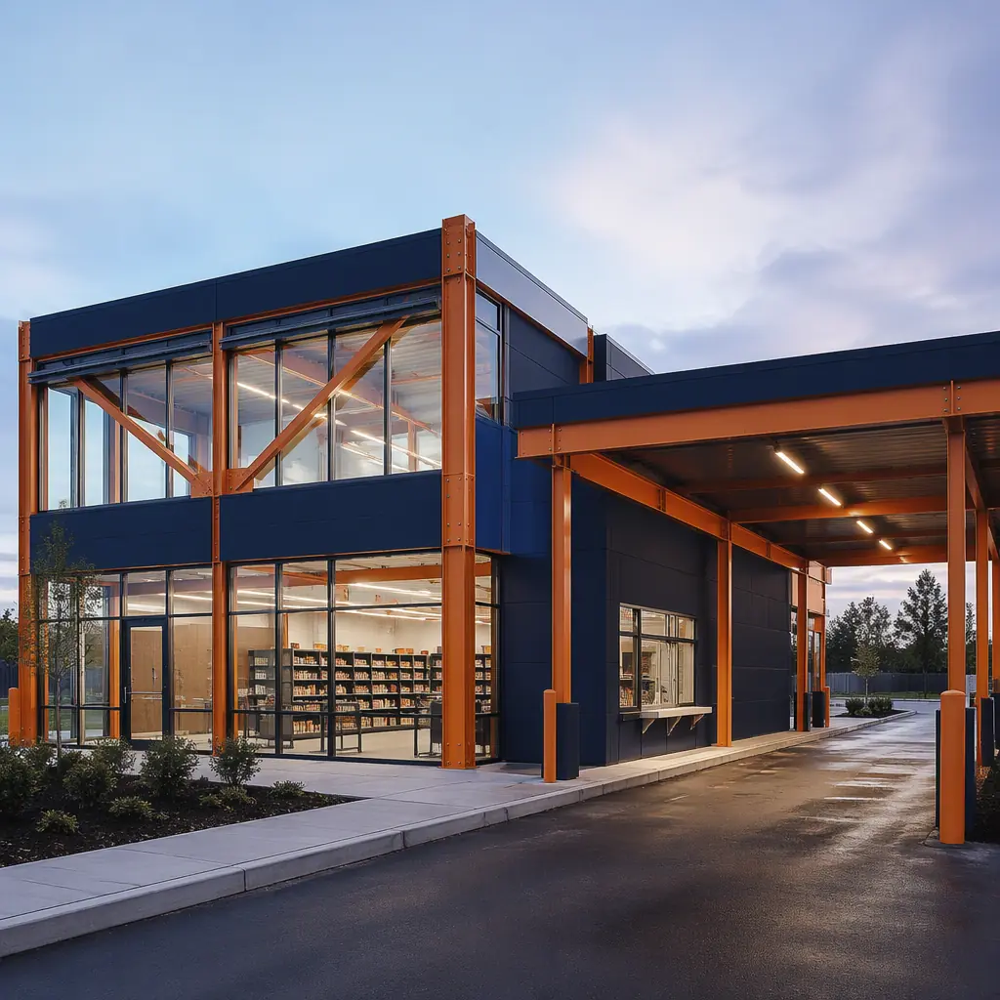
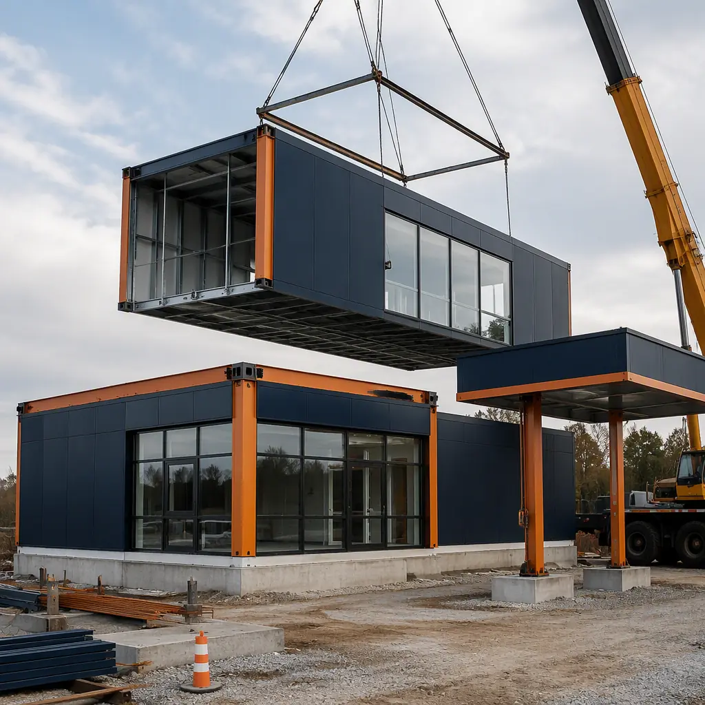
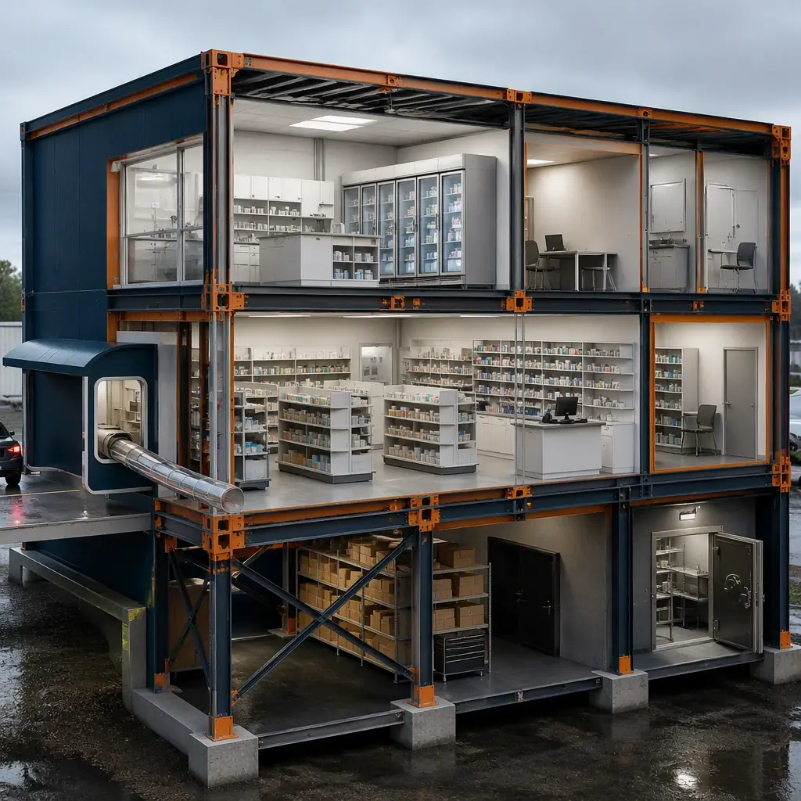
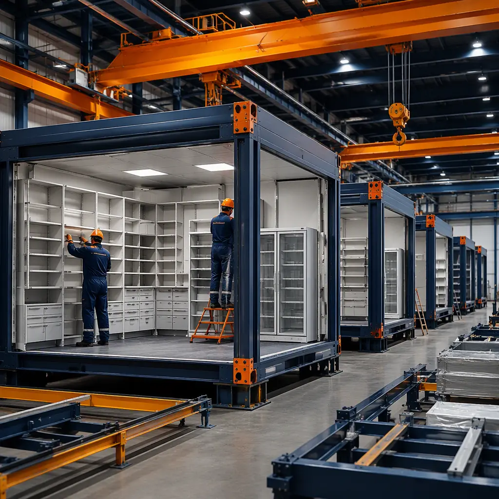

Pharmacies are the most schedule-critical retail building type in healthcare. There are roughly 88,000 pharmacies in the United States, and the retail pharmacy market is consolidating and rebuilding simultaneously: major chains are closing underperforming stores while expanding healthcare services — immunizations, point-of-care testing, medication therapy management, and telehealth consultation rooms — into fewer, larger locations. For independents, the build-versus-buy decision is often decided by construction speed: a pharmacy that opens 4 months earlier captures prescription volume before a competitor enters the trade area, and a drive-thru window alone can add 15–25% to prescription volume by serving patients who cannot or will not enter the store. Conventional pharmacy construction runs 8–12 months. Modular prefabricated construction manufactures the pharmacy — dispensary, retail floor, cold-chain storage, consultation rooms, and drive-thru — as factory-built steel-frame modules, compressing delivery to 4–7 months. The same healthcare-adjacent manufacturing model that accelerates modular medical clinic construction applies at pharmacy scale.

Why Pharmacy Construction Is Uniquely Complex
Pharmacies combine retail operations with regulated healthcare functions, which makes the building program more demanding than its footprint suggests:
- Cold-chain and temperature control are non-negotiable. Prescription medications — insulin, biologics, vaccines, and compounded drugs — require controlled storage at defined temperatures, typically 59–86°F ambient with dedicated refrigeration at 36–46°F and freezer capacity at −4 to 14°F. Pharmacy modules arrive with cold-chain storage, temperature monitoring, and backup power pre-installed. The temperature-controlled environment discipline parallels modular cold storage construction.
- Drive-thru is a structural program. The drive-thru window — with its canopy, pneumatic tube system, signage, and traffic flow — must be integrated with the pharmacy's workflow so a technician can serve drive-thru and counter patients without leaving the dispensary. Factory-built drive-thru modules arrive with the tube system and canopy pre-installed, eliminating a field-coordination bottleneck.
- Regulatory compliance gates the opening. Pharmacy licensure requires board-of-pharmacy inspection of the physical facility — secure storage, compounding areas, controlled-substance handling, and sanitation — before opening. Factory-documented construction gives regulators a complete, auditable record of finishes, security, and environmental systems. The compliance approach follows our permitting and zoning guide.
- Location is a lease, and leases have clocks. Pharmacy locations are typically leased with rent commencement tied to opening; every month of construction delay is a month of rent with no revenue. The schedule economics are the same ones we document for modular construction lease vs buy.


What Gets Factory-Built — The Pharmacy Module Package
The modular pharmacy divides into functional modules that can be manufactured, fitted out, and shipped independently, then combined on site into a building of 2,500 to 12,000 sq ft:
Dispensary and Pharmacy Workflow Modules
The heart of the pharmacy — the dispensary with its workstations, drug storage, compounding area, and secure controlled-substance vault — arrives as a finished module with pharmacy-grade shelving, refrigeration, and security systems pre-installed. A typical dispensary module is 600–1,200 sq ft with 9–10 ft ceilings, engineered for the workflow that keeps pharmacists at the counter rather than walking for inventory. The healthcare fit-out discipline follows modular community health center construction.
Retail Floor and Front-of-Store Modules
The retail floor — OTC medications, personal care, and convenience categories — arrives with millwork, gondola-ready floor grids, and checkout infrastructure pre-installed. The retail program is documented in modular retail construction, with the healthcare adjacency covered in modular urgent care center construction.
Drive-Thru and Canopy Modules
The drive-thru package — window module, pneumatic tube system, service canopy, and queuing lane — is factory-built and tested before shipment, with the tube system's send/receive stations integrated into the dispensary module. This eliminates the coordination failures that typically add 4–8 weeks to conventional drive-thru pharmacy builds.
Consultation, Vaccination, and Clinical Service Modules
Modern pharmacies are expanding into clinical services: private consultation rooms, immunization rooms, and point-of-care testing spaces. These arrive as finished modules with medical-grade finishes, ventilation, and handwashing stations — the same clinical module package documented in modular outpatient clinic construction.

Cold Chain, Security, and MEP — The Technical Package
Three technical systems separate a pharmacy build from ordinary retail, and modular construction controls all three at the factory:
- Cold-chain infrastructure. Refrigeration units, temperature monitoring with alarm and audit logging, and generator-backed power for critical circuits are factory-installed and validated before shipment — eliminating the field commissioning delays that can push pharmacy openings past their target dates. The controlled-environment engineering follows modular pharmaceutical GMP facility construction.
- Security and controlled-substance storage. Dispensary modules are engineered for DEA-compliant secure storage — reinforced controlled-substance vaults, access control, and alarm systems — with the security documentation package delivered for board-of-pharmacy review.
- MEP integration. Pharmacy HVAC must maintain temperature and humidity bands year-round, with dedicated exhaust for any compounding areas. Mechanical modules arrive with air handling, ductwork, and controls factory-installed — the integration discipline documented in modular MEP systems integration.
Cost Structure — Modular vs. Conventional Pharmacy Build
| Cost Category | Conventional (5,000 sq ft Pharmacy) | Modular (5,000 sq ft Pharmacy) |
|---|---|---|
| Structure & envelope | $0.7–1.1M | $0.55–0.85M (factory steel frame) |
| Dispensary & pharmacy systems | $0.35–0.55M | $0.3–0.45M (factory-installed) |
| Retail floor & front-of-store | $0.4–0.6M | $0.3–0.5M (factory millwork) |
| Drive-thru & canopy | $0.2–0.35M | $0.15–0.28M (factory tube system) |
| Cold chain, security & MEP | $0.35–0.55M | $0.28–0.45M (factory-validated) |
| Total Building Cost | $2.0–3.15M | $1.58–2.53M |
The 20–30% building cost reduction compounds with 3–5 months of earlier opening: a pharmacy filling 200–400 prescriptions per day generates $60K–$150K per month in prescription revenue, so schedule compression alone can cover the cost difference. For a full treatment of modular project economics, see our 2026 modular cost guide and our developer's ROI analysis.
Delivery Models — Freestanding, Inline, and Relocatable
Pharmacy projects follow three distinct delivery models, and modular construction fits each:
- Freestanding and drive-thru pharmacies. The dominant model for chains and independents in suburban trade areas: a 3,000–6,000 sq ft building with a drive-thru lane, delivered as a module package over 4–7 months versus 8–12 months conventionally. The retail-building economics follow our lease vs buy analysis.
- Inline and strip-center locations. Pharmacies anchoring strip centers can be delivered as modules set into a shell-and-core building, with the dispensary and drive-thru modules manufactured while the center's shell is under construction — compressing the tenant-improvement schedule that typically delays pharmacy openings in new retail centers.
- Relocatable and temporary pharmacies. During pharmacy renovations, natural disasters, or community health emergencies, relocatable pharmacy modules provide interim dispensing capacity. The relocatable-building experience from modular temporary and relocatable facilities applies directly.
Compliance — Board of Pharmacy, DEA, and ADA
Pharmacies operate under state board of pharmacy regulations for facility licensure, DEA requirements for controlled-substance storage and recordkeeping, USP 795/797/800 standards for compounding and hazardous drug handling where applicable, and ADA requirements covering the retail floor, counters, and drive-thru. Modular delivery supports compliance by building to the same standards in a factory environment with third-party inspections at each production stage, and by delivering the complete construction documentation package for board review — the compliance approach we outline for permitting and zoning in modular construction, with the accessibility program covered in our ADA compliance guide.
Is Modular Right for Your Pharmacy Project?
Modular pharmacy delivery delivers the strongest value when speed-to-prescription-volume is the business case — which it almost always is, given lease clocks and competitor timing — and when the program includes the modules where factory quality is highest: dispensaries with cold-chain and security systems, drive-thru packages, and clinical service rooms. For a flagship urban pharmacy with a complex architectural program, a hybrid approach — modular dispensary and drive-thru modules with conventional retail shell construction — delivers most of the schedule and quality benefits while preserving design freedom. For chains rolling out multiple locations, production-line repeatability cuts design cost per store and standardizes the compliance documentation across the network — consistent with the modular franchise rollout programs we document elsewhere.